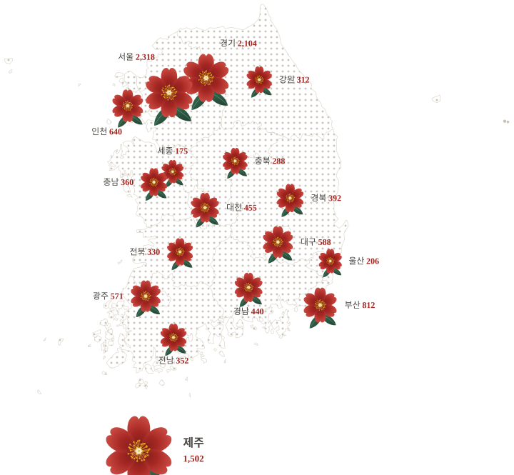

하영이
오늘의 대한민국 아이'하영'은 제주어로 '많이'라는 뜻이에요. 더 많은 국민의 마음이 모이길 바라는 이름입니다. 동백 바구니를 들고 전국을 다니며 여러분의 한 줄을 모아 2028년 추념식까지 전합니다.
제주4·3 80주년 · 2026. 10. 30 – 12. 4
하영이와 동백이 전국을 돌며 한 문장을 모읍니다. 당신이 남긴 한 줄은 2028년 4월 3일, 제80주년 추념식의 국민 메시지가 됩니다.
혼저옵서예! 한 줄 남겨줄래요?
캐릭터 소개
'하영'은 제주어로 '많이'라는 뜻이에요. 더 많은 국민의 마음이 모이길 바라는 이름입니다. 동백 바구니를 들고 전국을 다니며 여러분의 한 줄을 모아 2028년 추념식까지 전합니다.

동백은 제주4·3 희생자를 기리는 상징 꽃입니다. 추운 겨울에도 피어나는 토종 홑동백처럼, 80년의 기억이 다음 세대로 이어지길 바라는 마음을 담았어요.
아이와 꽃이 늘 함께 다니는 이유 — 제주4·3의 기억(동백)이 오늘의 세대(하영이)와 함께 걸어갈 때, 역사는 국민 모두의 것이 됩니다.
한 줄 보드
모든 글은 운영자가 확인한 뒤 게시됩니다. 마음에 닿는 글에는 공감을 눌러 주세요. 아래 글은 시안 예시
참여 방법
80주년 기념사업 아이디어, 제주4·3에게 보내는 한 문장, 내가 만난 제주4·3, 미래세대와 제주4·3 중 하나를 고릅니다.
300자 이내로 씁니다. 이름 대신 닉네임, 사는 지역, 연령대만 적습니다.
남기면 동백이 꽃 한 송이를 건넵니다. 마음을 울린 응원글로 선정되면 동백 배지를 보내 드립니다.

전국 동백 지도
17개 시도와 독도·울릉도까지, 매일 자정 참여 수를 반영합니다. 수치는 시안 예시


동백 배지
운영진이 마음을 울린 응원글을 골라 동백 배지를 보내 드립니다. 선정되면 남겨 주신 연락처로 배송지를 여쭙습니다.
11월 응원글 선정 · 12. 1 발표 · 선정자에게 동백 배지 발송
공감이 가장 많은 문장은 하영이와 동백이 매주 금요일 쇼츠로 만듭니다.
제주4·3 알아보기
3·1절 기념대회 발포 사건. 제주4·3의 도화선이 됩니다.
무장봉기와 이어진 진압 과정에서 수많은 제주도민이 희생됩니다.
한라산 금족 지역이 전면 개방되며 7년 7개월의 사건이 끝납니다.
제주4·3특별법이 제정됩니다.
정부 진상조사보고서 확정 후 대통령이 국가 권력의 잘못을 공식 사과합니다.
제주4·3이 국가기념일(법정 명칭 「4·3희생자 추념일」)로 지정되어 첫 국가 추념식이 열립니다.
제주4·3기록물이 유네스코 세계기록유산에 등재됩니다.
제주4·3 80주년 추념식. 국민의 한 줄이 함께합니다.
묻고 답하기
필요 없습니다. 닉네임, 지역, 연령대만 적으면 됩니다. 연락처는 응원글로 선정됐을 때 동백 배지를 받고 싶은 분만 선택해서 적습니다.
주제별로 분류해 80주년 기념사업 기본계획 검토 자료로 쓰고, 공감이 많은 문장은 추념식 영상·전시의 국민 메시지로 쓰일 수 있습니다. 결과는 12월에 이 페이지에 공개합니다.
모든 글은 운영자가 24시간 안에 확인한 뒤 게시합니다. 비방·개인정보·제주4·3 왜곡 표현이 담긴 글은 게시하지 않습니다.
필요한 최소 항목만 받고 암호화해 보관합니다. 연락처는 동백 배지 발송이 끝나면 바로 파기합니다.